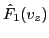

Consider the case that the equilibrium distribution  is Maxwellian in
velocity space:
is Maxwellian in
velocity space:
which satisfies the normalization condition
. The derivative of with respect to is written
Using this, Eq. (75) is written
Take the initial condition of  to be
to be
which is a Maxwellian distribution that satisfies the normalization
.
Equation (78) with the initial condition Eq. (79) was
solved numerically to obtain the time evolution of (the code is in
/home/yj/project/landau_damping/). Figure 7 compares the velocity
distribution function at
with that at
,
which shows that the distribution function develops fine structures in
velocity space.
Figure:
Comparison of at  and
. (a) real part; (b) imaginary part.
.
and
. (a) real part; (b) imaginary part.
.
|
It is ready to realize that the fine velocity space structures are partially
due to the first term on the right-hand side of Eq. (78). When only
this term is retained, Eq. (78) is written
which has the dispersion relation
which indicates that Eq. (80) has different eigenfrequencies for
different points in velocity space. Thus, an initially rather smooth velocity
distribution function will become not so smooth after some time due to the
distribution function oscillate with different frequencies at different
velocity points. This is the so-called ``phase mixing''. It is obvious that,
after some time, the phase mixing will make the velocity distribution function
 rather messy, which poses a great challenge to the numerical
resolution of
. Given a fixed velocity grids, the numerical
results will become inaccurate when the grids is not fine enough to resolve
the fine velocity distribution structures.
Note that the electric field is related to the integration of , i.e.
Then it is fairly obvious that the phase mixing have the possibility of
reducing the magnitude of the perturbed electric field. Figure 8
plot the time evolution of (the factor
in
Eq. (82) is removed), which shows that electric field oscillates
with the amplitude decreasing with time. This confirms that the phase mixing
reduces the magnitude of the electric field.
Figure:
(a) time evolution of real and imaginary parts of
. (b) time evolution of
.
.
|
yj
2016-01-26